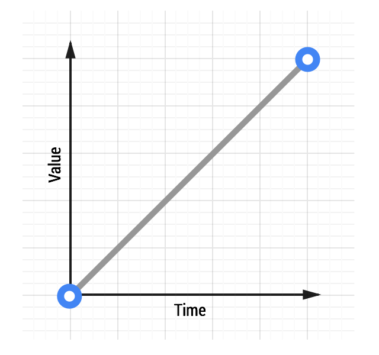
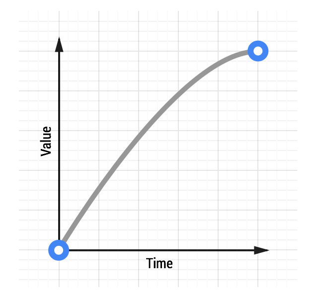
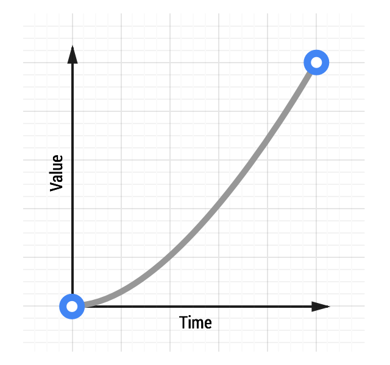
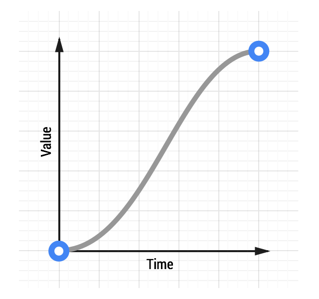

In classic animation the terms for motion that starts slowly and accelerates is “slow in”, and those that start quickly and decelerate are referred to as “slow out”, but the terminology most commonly used on the web for these are “ease in” and “ease out” respectively. Sometimes the two are combined, which is called “ease in out”. Easing, then, is really the process of making the animation less severe or pronounced.
Easing Keywords
CSS transitions and animations both let you choose the kind of easing you want to use for your animations. You can use keywords that affect the easing (or timing as it’s sometimes called) of the animation in question. You can also go completely custom with your easing, which gives you way more freedom to express your app’s personality.
Here are some of the keywords that you can use in CSS:
linearease-inease-outease-in-out
Source: CSS Transitions, W3C
You can also you use a steps keyword, which allows you to create transitions that have discrete steps, but those listed above are the most useful for creating animations that feel natural, and that’s exactly what you’ll want.
Linear animations
Animations without any kind of easing are referred to as linear. A graph of a linear transition looks like this:

See a linear animation.
As time moves along the value increases in equal amounts. With linear motion things tend to feel robotic and unnatural, and this is something users will find jarring. Generally speaking you should avoid linear motion.
Whether you’re coding your animations by CSS or JavaScript you’ll find that there is always an option for linear motion. To achieve the effect above with CSS, the code would look something like this:
transition: transform 500ms linear;
Ease-out Animations
Easing out causes the animation to start more quickly than linear ones, and it also has deceleration at the end.

There are many ways to achieve an ease out effect, but the simplest is the ease-out keyword in CSS:
transition: transform 500ms ease-out;
See an ease-out animation.
Easing out is typically the best for user interface work, because the fast start gives your animations a feeling of responsiveness, while still allowing for a little bit of natural slowdown at the end.
Ease-in Animations
Ease-in animations start slowly and end fast; the opposite of ease-out.

See an ease-in animation.
This kind of animation is like a heavy stone falling, where it starts slowly and hits the ground quickly with a deadening thump.
To use an ease-in animation, similarly to ease-out and linear animations, you can use its keyword:
transition: transform 500ms ease-in;
From an interaction point of view, however, ease-ins can feel a little unusual because of their abrupt end; things that move in the real world tend to decelerate rather than simply stopping dead. Ease-ins also have the detrimental effect of feeling sluggish to get going, which will negatively impact the perception of responsiveness in your site or app.
Ease-in-out Animations
Easing both in and out is akin to a car accelerating and decelerating and, used judiciously, can provide a more dramatic effect than just easing out.

See an ease-in-out animation.
Care must be taken here to not have an overly long animation duration, because of the sluggishness of an ease-in start to the animation. Typically something in the region of 300 - 500ms is going to be suitable, but it will depend heavily on the feel of your project as to what the exact number is. That said, because of the slow start, fast middle, and slow end, you will end up with an increased contrast to the animation, which can be quite satisfying for users.
To get an ease-in-out animation you can use the ease-in-out CSS keyword:
transition: transform 500ms ease-in-out;